Documente WORD
Fişa Nr.1
Formatarea paginii
1. Deschiderea aplicaţiei Microsoft Word
Start → Programs → Microsoft Office → Microsoft Word
au dublu clic pe pictograma de pe desktop.
2. Închiderea aplicaţiei
Fişier(File) → Ieşire(Close) sau clic pe butonul X din fereastra deschisă (dreapta sus)
3. Crearea unui document nou pornind de la un şablon gol
Clic pe File → clic pe New → clic 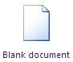
4. Modificarea sau setarea marginilor de pagină
În fila Aspect pagină (Layout)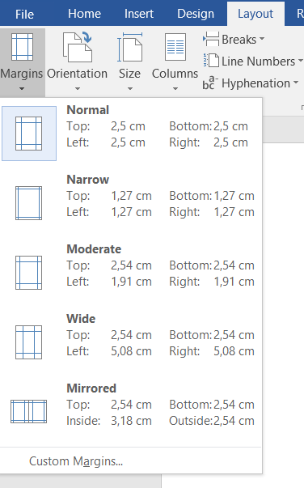 faceţi clic pe Margini (Margins) şi din listă puteţi alege un
tip de margine (Normal, Wide, etc) sau Margini particularizate… (custom Margins…
5. Modificarea sau setarea orientării întregului document.
În fila Aspect pagină (Layout) 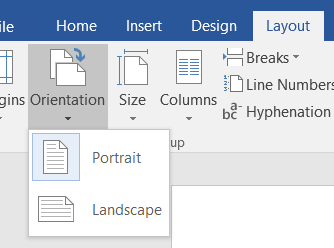→ Clic pe Orientare(Orientation) → Alegem Portret(Portrait) sau Vedere(Landscape)
6. Setarea mărimi documentului
În fila Aspect pagină (Layout)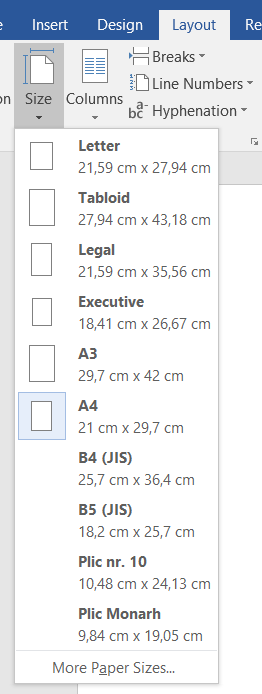 → Mărime(Size) → Se alege o mărime din listă sau More Paper Sizes..
7. Mărirea sau micşorarea rapidă a unui document
Pe bara de stare găsiţi glisorul Panoramare. Glisaţi la setarea procentuală dorită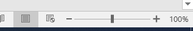
8. Inserarea aceluiaşi antet şi a aceluiaşi subsol într-un document
În fila Inserare (Insert)
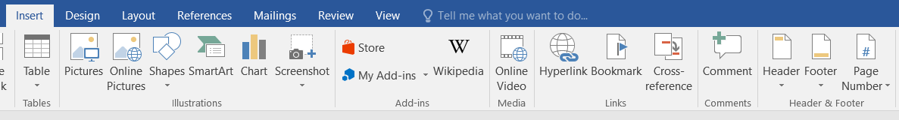
în grupul Antet & Subsol(Header & Footer) click pe Antet(Header) sau Subsol(Footer)
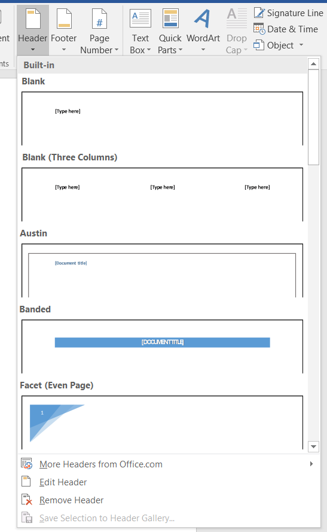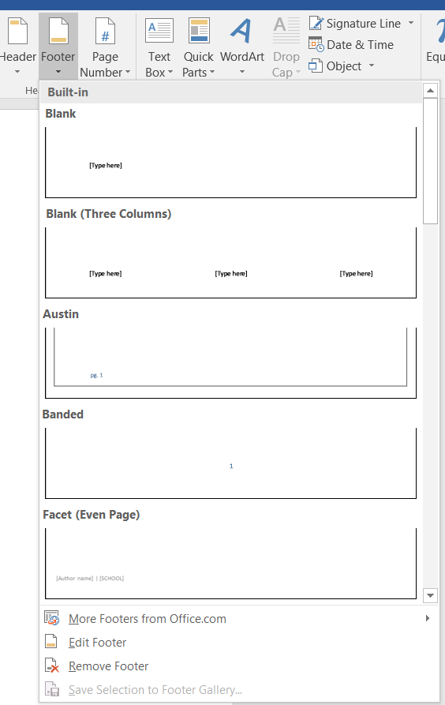
→ Click pe proiectul de antet sau subsol dorit.
Dacă este cazul se poate formata textul.
9. Inserarea textelor sau reprezentărilor grafice într-un antet sau subsol şi salvarea acestora în galerie
În fila Inserare (Insert) în grupul Antet & Subsol(Header & Footer) click pe Antet(Header) sau Subsol(Footer)
→ Clic pe editare antet sau editare subsol
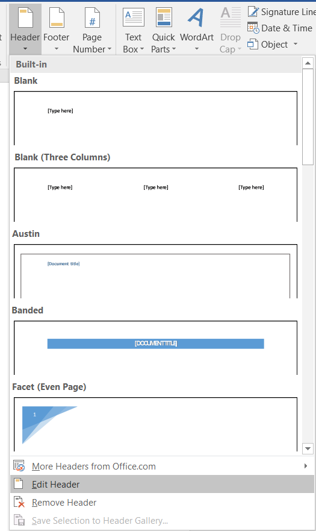
→ Inseraţi textul sau reprezentarea grafică
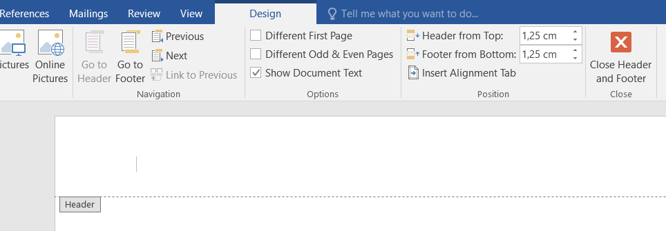
Selectare text sau reprezentări grafice din antet sau subsol → Clic Salvare selecţie ca antet nou (sau subsol nou)(Save Selection to Header Gallery...)
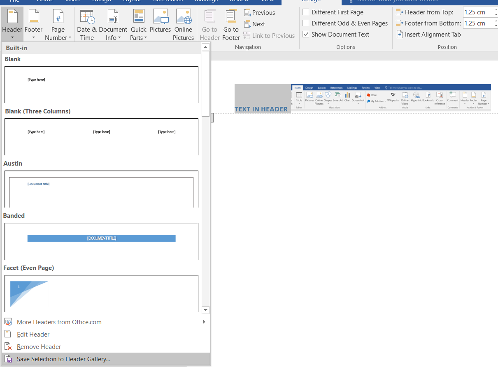
10. Utilizarea orientărilor tip Portret şi tip Vedere în acelaşi document
Schimbare orientare pagini.
- În Microsoft Word, selectează conţinutul căruia vrei să îi aplici noua orientare de pagină. Dacă pagina respectivă este goală, fără conţinut, fă clic în pagină;
- Apoi, apasă pe fila Aspect. În secţiunea Iniţializare pagină(Page Setup), dă clic pe butonul din colţul dreapta-jos pentru a deschide fereastra Iniţializare pagină(Page Setup);
- Se selectează orientarea dorită Portret sau Vedere (Portrait or Landsscape ) aplicat pentru pagina sau textul selectat(Apply to..);
- Deschide meniul derulant de la "Se aplică la:" şi alege "Text selectat" sau "De la acest punct înainte" pentru o pagină goală. Pentru a pune în aplicare noile setări, apasă butonul OK.
11. APLICAŢIE:
- Lansaţi aplicaţia Microsoft Office Word;
- Să se creeze documentul clasa9 pornind de la un ablon gol;
- Scrieţi o propoziţie în prima şi a doua pagină. A treia pagină să fie goală;
- Să se modifice marginile paginilor folosind setarea implicită Narrow;
- Să se insereze un antet şi care să conţină textul "LICEUL NATIONAL DE INFORMATICA" şi sigla liceului;
- Salvaţi antetul în galerie (Header Gallery);
- Să se insereze un subsol care să conţină ca text numele vostru şi o imagine la alegere;
- Salvaţi subsolul în galerie (Footer Gallery);
- Să se schimbe orientarea paginii a doua la Vedere(Landscape) celelalte două fiind Portret(Portrait);
- Salvaţi documentul realizat.